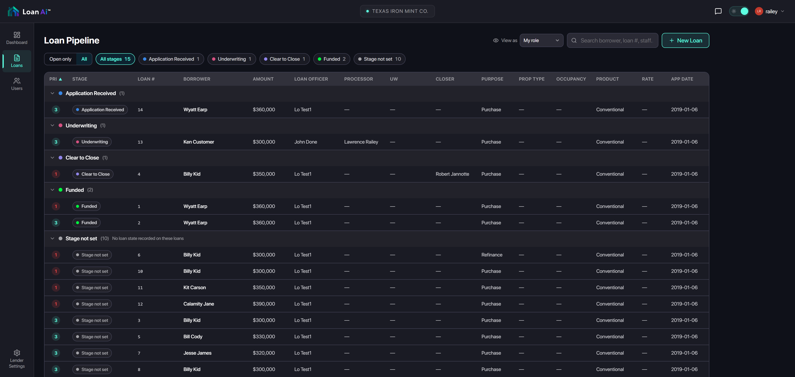
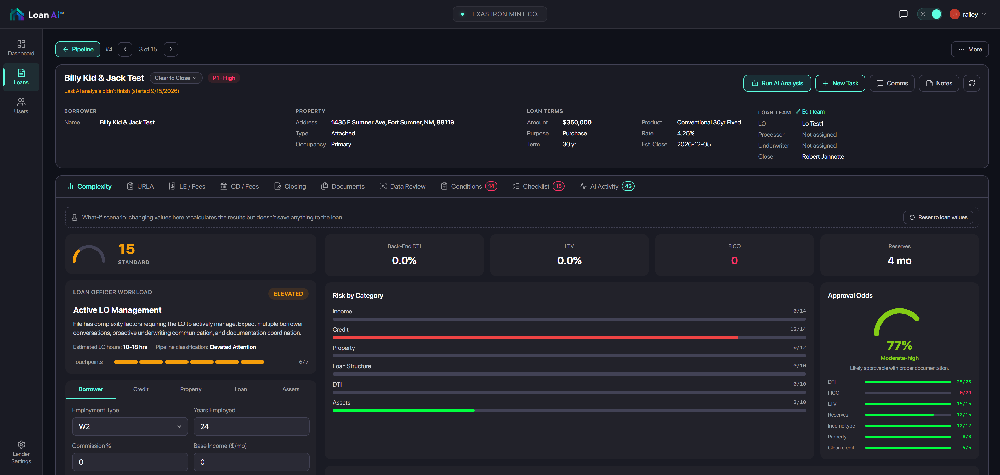
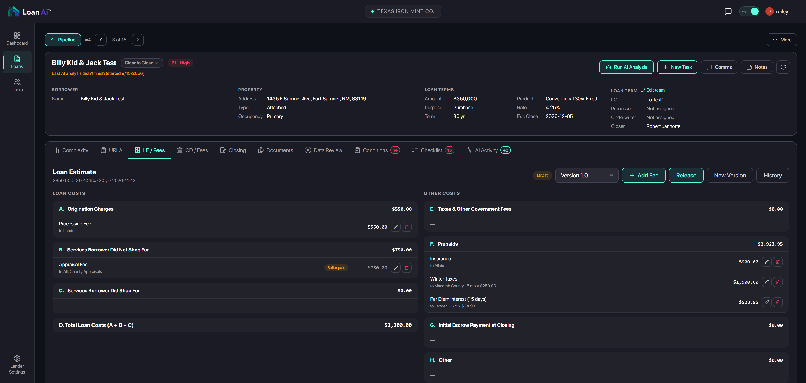
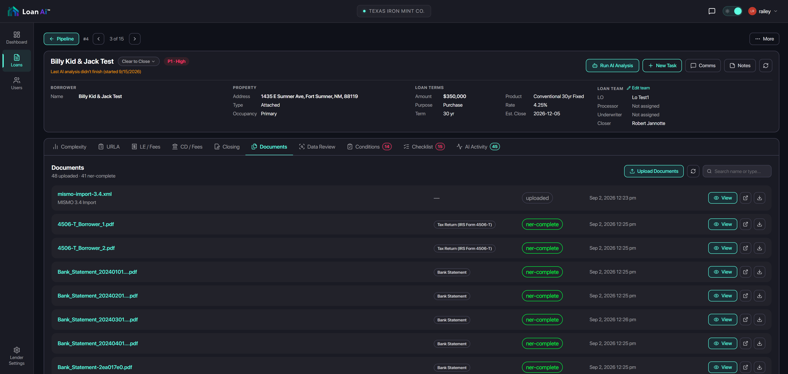
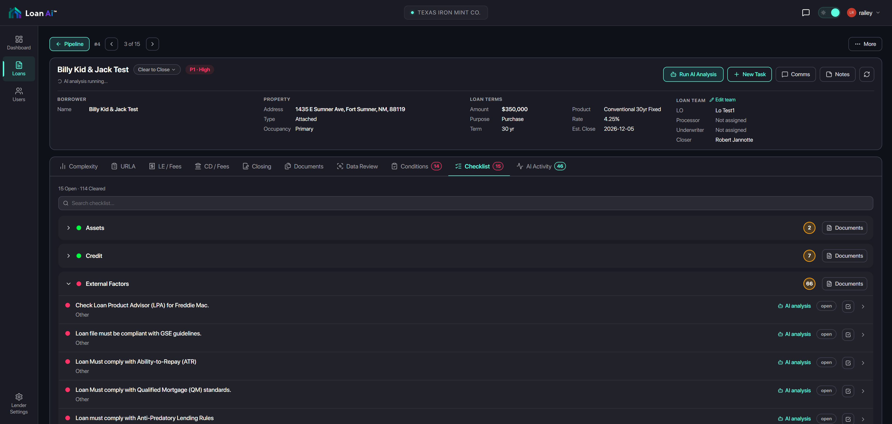
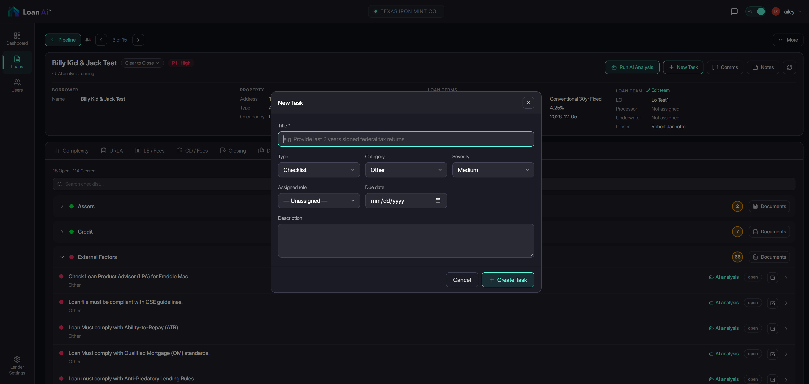
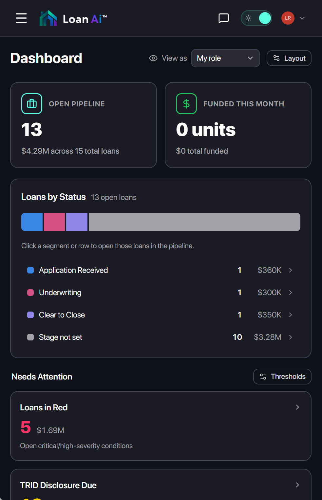
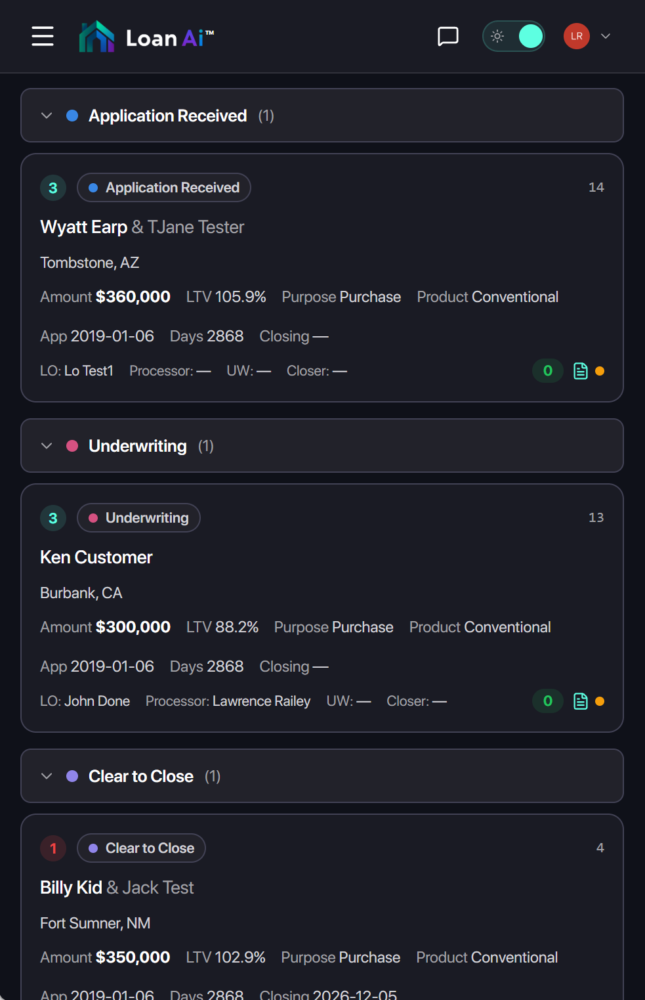
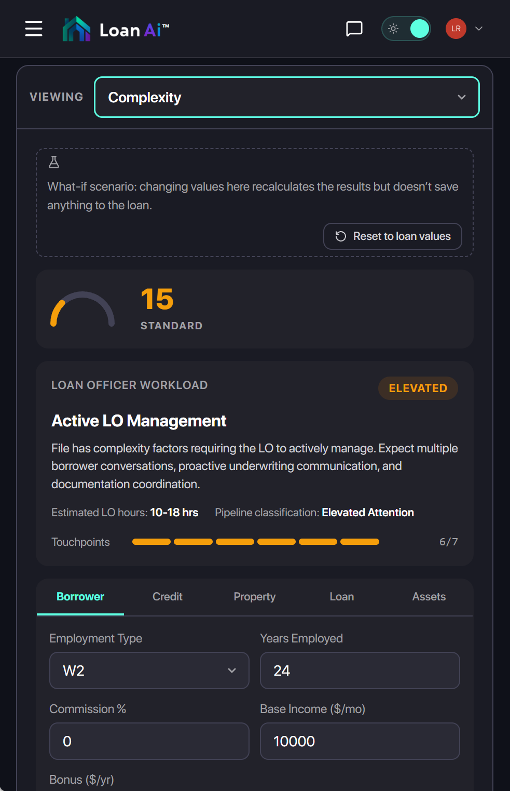
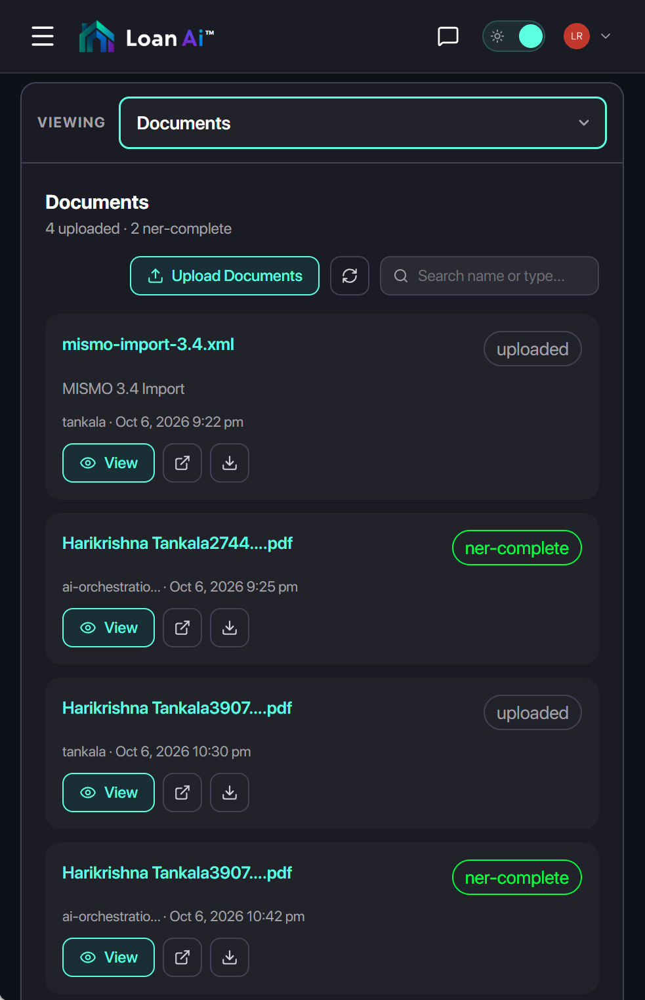

AI engineering
LoanAI
Delivered the interfaces and front-end code for two purpose-built lending products.
Outcomes & evidence
- AI administration and lending operations, built on one design system
- 2 products
I connected stakeholder and end-user research with brand identity, reusable components, and full front-end delivery. Token cost and regulatory constraints shaped the specialized AI product architecture.
I created the LoanAI brand and design system, designed both product interfaces, and delivered all front-end development. These screenshots show the applications I built.
LoanAI / Desktop
Desktop workspace
I designed and implemented the desktop lending experience.


Grouped loans by stage and exposed ownership and priority to support pipeline review.


Brought workload, risk categories, and scenario controls into one analysis workspace.


Separated loan and other costs while keeping version and release actions in context.


Combined document identity, processing status, and review actions in one list.


Grouped checklist items by category so users can inspect outstanding work.


Kept task type, severity, responsibility, and due date together in a focused dialog.
PRODUCT · DESKTOP & MOBILE
Inside the lending workspace.
LoanAI / Mobile
Mobile workspace
I adapted and implemented the lending workflows for smaller screens.


Prioritized pipeline status and items needing attention in a compact overview.


Recast the desktop table as cards while retaining stage, borrower, and loan context.


Stacked analysis and workload information while keeping product areas accessible through a selector.


Used document cards to preserve status and review actions on a narrow screen.
IDENTITY · PRODUCT · VISUAL LANGUAGE
One identity, across every touchpoint.
I created the identity and built the supporting website.

Carried the architectural mark and teal, blue, and violet identity into the application entry point.

Applied the product identity to the supporting website I built.

Made the platform’s document-focused subject matter tangible through brand illustration.

Extended the visual language into document-led marketing artwork.

Connected the brand imagery to the people and processes behind lending.
I created the Loan AI brand identity and built the website supporting it. The identity pairs an architectural mark with teal, blue, and violet gradients. The login experience carries that identity into the product, while layered document and workforce illustrations make the platform’s subject matter tangible.
Visit LendingTech Systems ↗I developed the front-end for every Loan AI application, combining my own expertise in JavaScript, TypeScript, React, and MUI with Claude and other AI development tools.
The interfaces bring loan complexity, officer workload, and AI model oversight into desktop and mobile workflows.
GREENFIELD STARTUP · BRAND TO FRONT-END DELIVERY
One foundation.
Two purpose-built products.
I created the Loan AI brand, supporting website, and design system. Working with product stakeholders and end users, I helped architect two products, designed their interfaces, and delivered all of the front-end development for both.
Consulting period: October 2025 — October 2026
THE BUILD WORKFLOW
Design the system. Build the products.
The aim was a substantially simpler lending experience: clear interfaces and task-specific AI working together. In a greenfield startup, I could connect the brand, research, and reusable components directly to working code.
- 01
Define
Brand identity
A coherent starting point
Supporting website - 02
Understand
Stakeholder research
Product direction
End-user workflows - 03
Systematize
Design system
A shared foundation
Reusable UI components - 04
Design + build
Product interfaces
Working applications
Full front-end code - 05
Iterate
AI-assisted development
Rapid iteration
Refine UI + components
AI administration
Model oversight, performance, and utilization in a dedicated administration experience.
Lending operations / LOS
Loan complexity, officer workload, and processing guidance in a simpler lending workspace.

AI IN THE PRODUCT + THE PROCESS
Specialized intelligence. Faster delivery.
Loan AI runs on a custom AI platform designed expressly for lending, rather than a general-purpose Claude or GPT integration. Claude, GPT, and other AI tools played a separate role in how I designed and developed the applications.
Purpose-built lending AI
A highly specialized implementation focused on lending tasks.
- Lower token costs through a narrow task scope
- More control over domain-specific behavior
- Closer alignment with regulatory requirements
AI-assisted front-end work
Claude, GPT, and other tools accelerate design and implementation.
- Iterate on the design system I created
- Generate and refine product interfaces
- Combine AI tooling with my coding expertise
JavaScript / TypeScript React MUI Design-system implementation